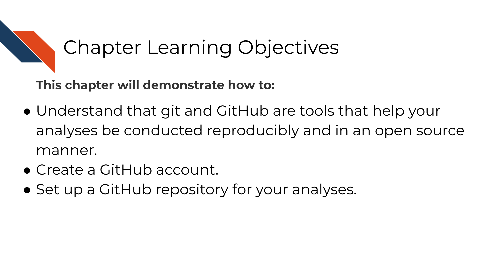
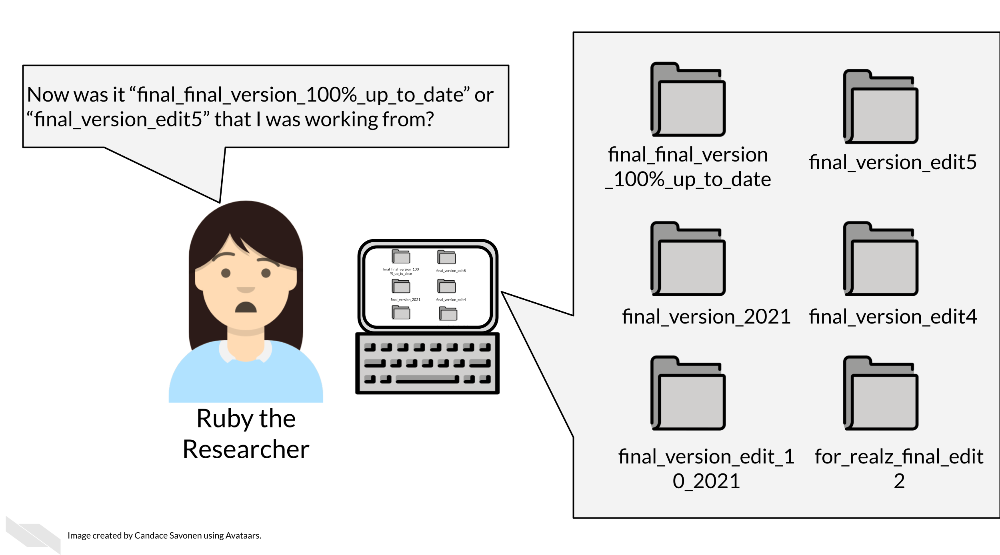
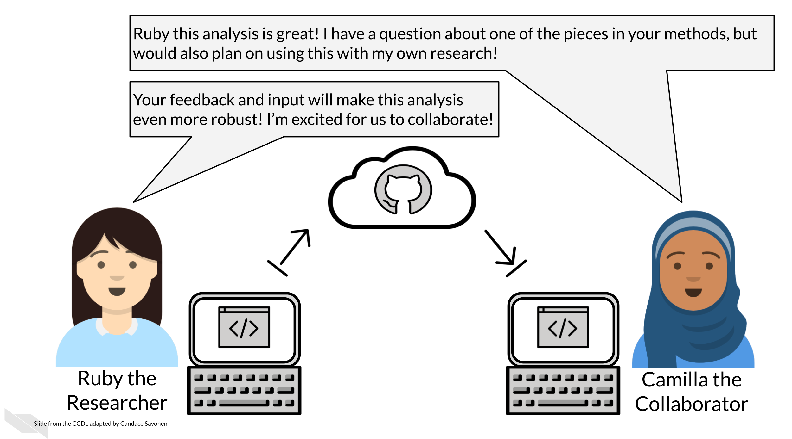
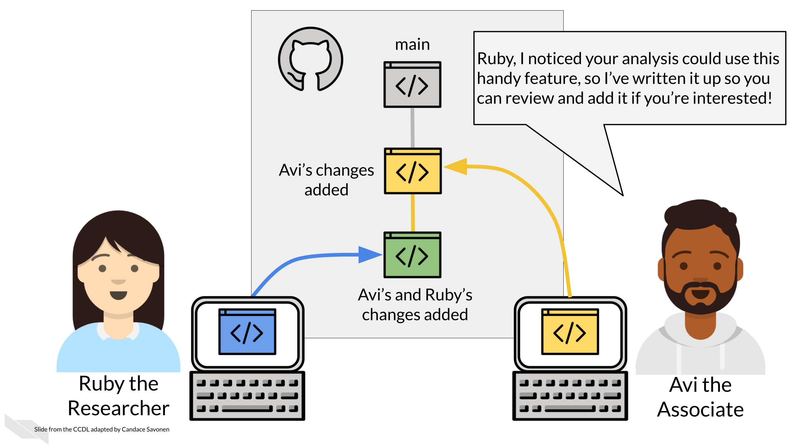

Chapter 4 Making your project open source with GitHub
4.1 Learning Objectives

git is a version control system that is a great tool for creating reproducible analyses. What is version control? Ruby here is experiencing a lack of version control and could probably benefit from using git.

All of us at one point or another have created different versions of a file or document, but for analysis projects this can easily get out of hand if you don’t have a system in place. That’s where git comes in handy.
There are other version control systems as well, but git is the most popular in part because it works with GitHub, an online hosting service for git controlled files.
GitHub and git allow you to…
4.1.0.1 Maintain transparent analyses
Open and transparent analyses are a critical part to conducting open science. GitHub allows you to conduct your analyses in an open source manner. Open science also allows others to better understand your methods and potentially borrow them for their own research, saving everyone time!

4.1.0.2 Have backups of your code and analyses at every point
Life happens, sometimes you misplace a file or your computer malfunctions. If you ever lose data on your computer or need to retrieve something from an earlier version of your code, GitHub allows you to revert your losses.

4.1.0.3 Keep a documented history of your project
Over the time course of a project a lot happens, especially when it comes to exploring and handling data. Sometimes the rationale behind decisions that were made around an analysis can get lost. GitHub keeps communications and tracks the changes to your files so that you don’t have to re-visit a question you already answered.

4.1.0.4 Collaborate with others

4.1.0.5 Experiment with your analysis
Data science projects often lead to side analyses that could be very worth while but might be scary to venture on if you don’t have your code well version controlled. Git and GitHub allow you to venture on these side experiments without fear since your main code can be kept safe from your side venture.

4.2 Get the exercise project files (or continue with the files you used in the previous chapter)
How to get the Python project example files
To get the Python project example files, click this link.
Now double click your chapter zip file to unzip. For Windows you may have to follow these instructions).
How to get the R project example files
To get the R project example files, click this link.
Now double click your chapter zip file to unzip. For Windows you may have to follow these instructions).
4.3 Exercise: Set up a project on GitHub
Now that we understand how useful GitHub is for creating reproducible analyses, it’s time to set ourselves up on GitHub.
Git and GitHub have a whole rich world of tools and terms that can get complex quickly, but for this exercise, we will not worry about those terms and functionalities just yet, but focus on getting code up on GitHub so we are ready to collaborate and conduct open analyses!
- Go to Github’s main page and click Sign Up if you don’t have an account.
- Follow these instructions to create a repository. As a general, but not absolute rule, you will want to keep one GitHub repository for one analysis project.
- Name the repository something that reminds you what its related to.
- Choose “Public”.
- Check the box that says “Add a gitignore”.
- Check the box that says “Add a README”.
- Follow these instructions to add the example files you downloaded to your new repository.
Congrats! You’ve started your very own project on GitHub! We encourage you to do the same with your own code and other projects!